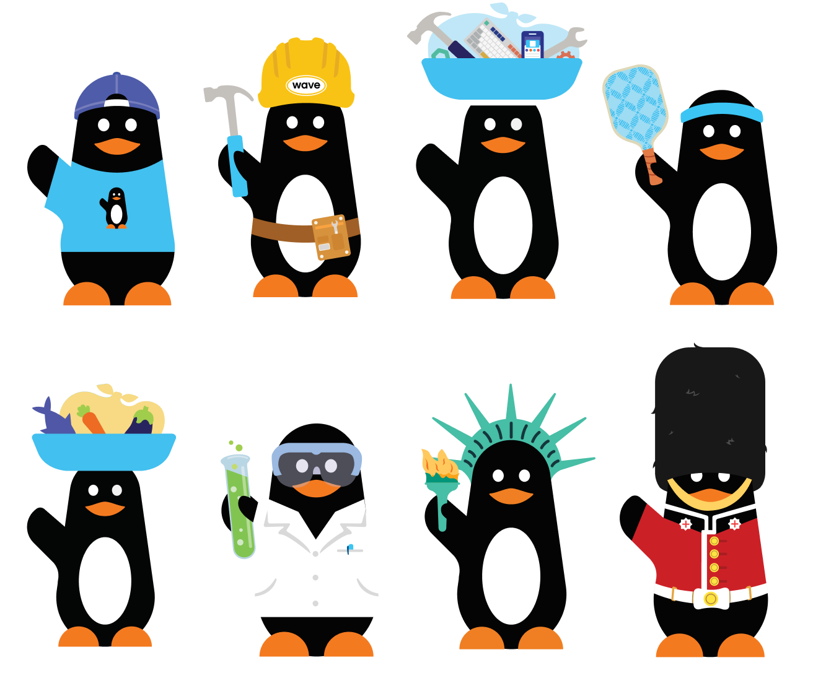
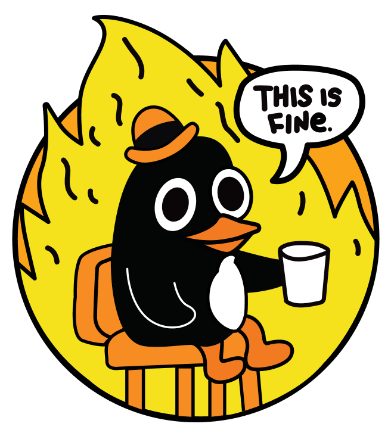
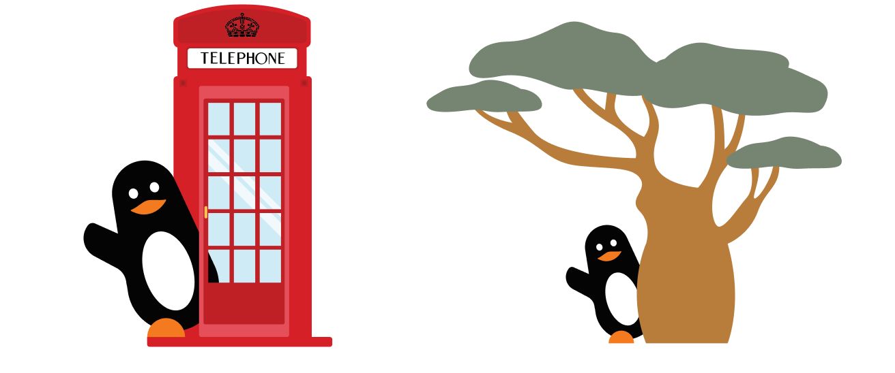
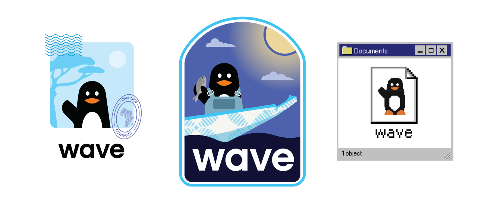
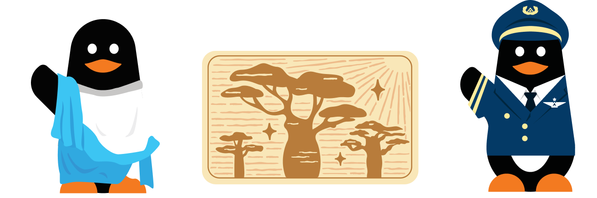
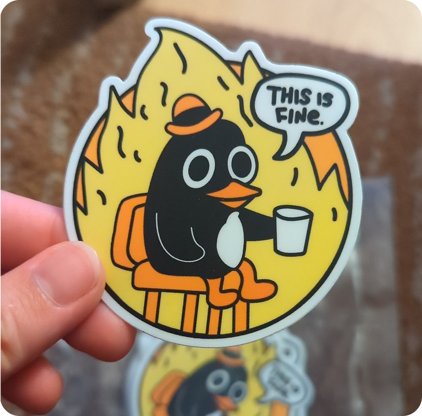
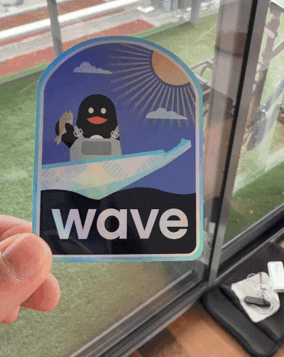

Wave Stickers
Wave's logo is a penguin. It doesn't have an official name, but unofficially I call it "Pengu."
I've created different variations of the Wave pengu like baobab pengu, pirogue pengu, beta pengu (for the TestFlight Wave app), merchant pengu (which is the Merchant penguin logo), distributor pengu (penguin wearing a backwards hat and a t-shirt with a penguing on it – recursive penguin!), infra pengu, and more!
I give these stickers to remote and in-country team members whenever I see them in person :)
These stickers live fruitful lives as slack emojis too!






← Back to all projects